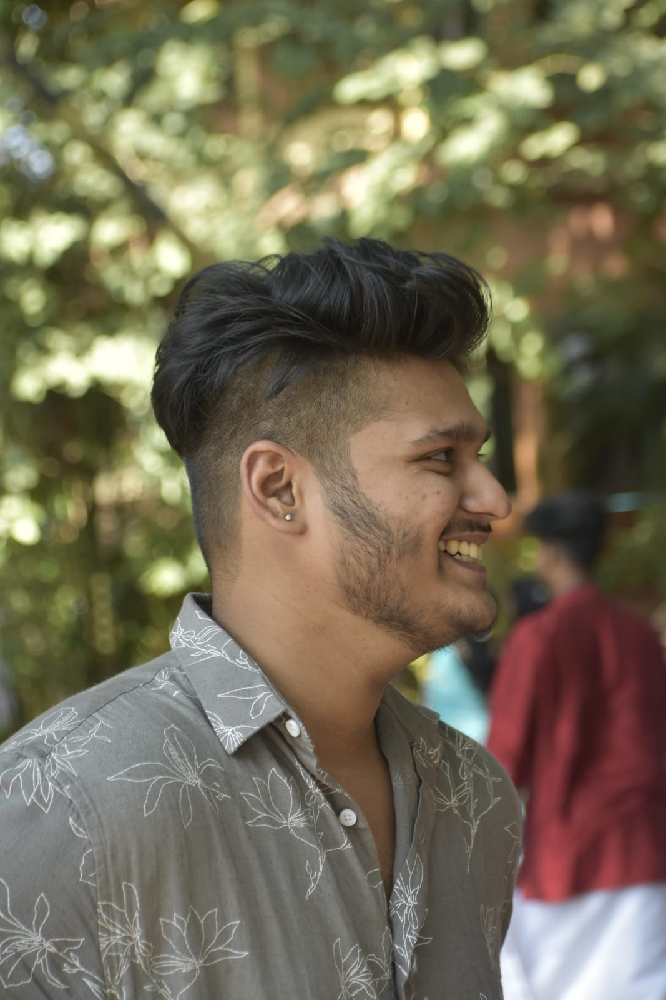

Govind B Shankar

Summary
- I am a hardworking and dedicated individual.
- Aspiring Software Developer with foundational knowledge in C and Java.
- Currently enhancing skills in frontend development technologies.
- Enthusiastic about creating intuitive and responsive user interfaces using
modern tools and frameworks.
- Strong problem-solving abilities and eager to apply programming skills to real-world
projects.
- Committed to continuous learning and development, with a keen interest in
full-stack development.
- Looking for opportunities to contribute to dynamic teams and advance in the
software development industry.
Quick to adapt to new environments and technologies, with a proactive approach to
continuous learning.
Education
Btech, Adi Shankara Institute of Engineering and Technology, Kochi(2021-2025)
Work Experience
Fresher
Skills
- Adaptability ⭐️⭐️⭐️⭐️
- Effective Time Management ⭐️⭐️⭐️⭐️
- Communication SKills ⭐️⭐️⭐️
- Organisation Skills ⭐️⭐️⭐️⭐️⭐️
- Ability To Work Under pressure ⭐️⭐️⭐️⭐️
- Cooperation With Team Members ⭐️⭐️⭐️⭐️⭐️
Others